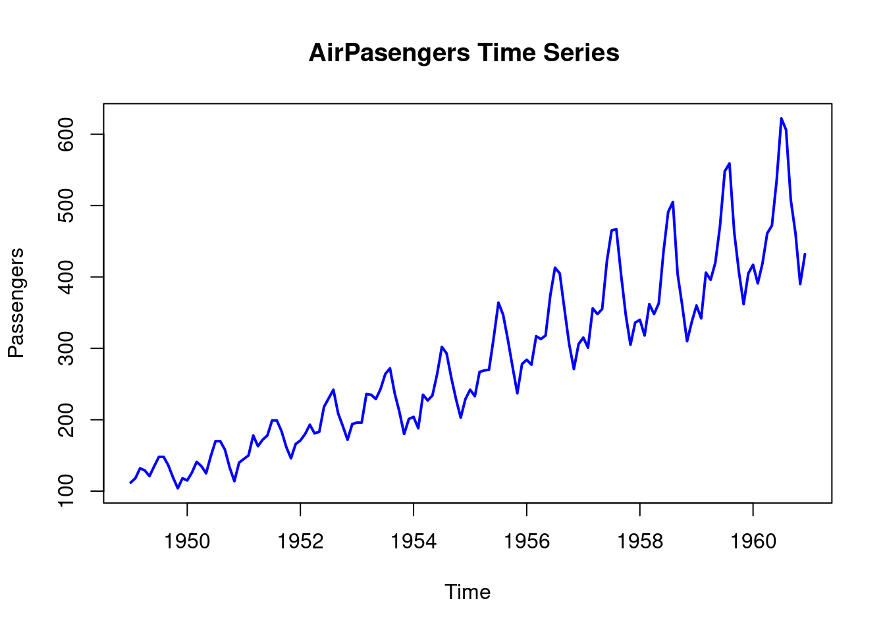
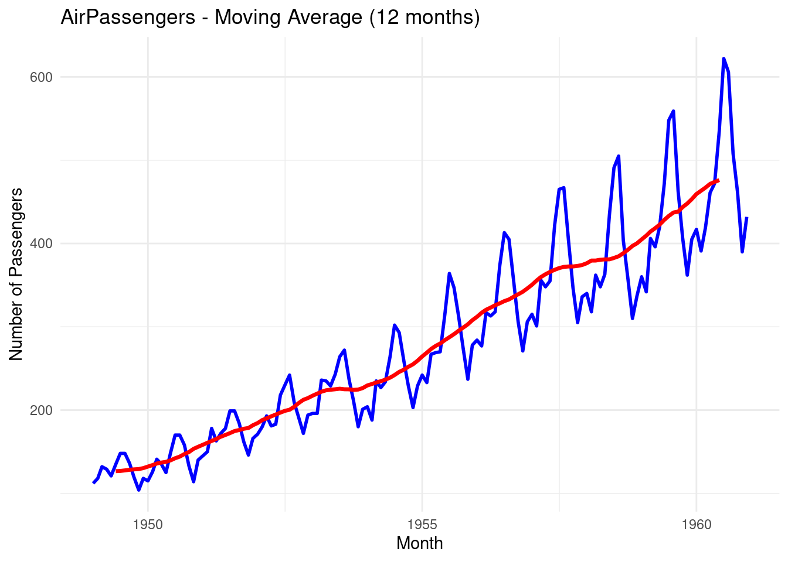
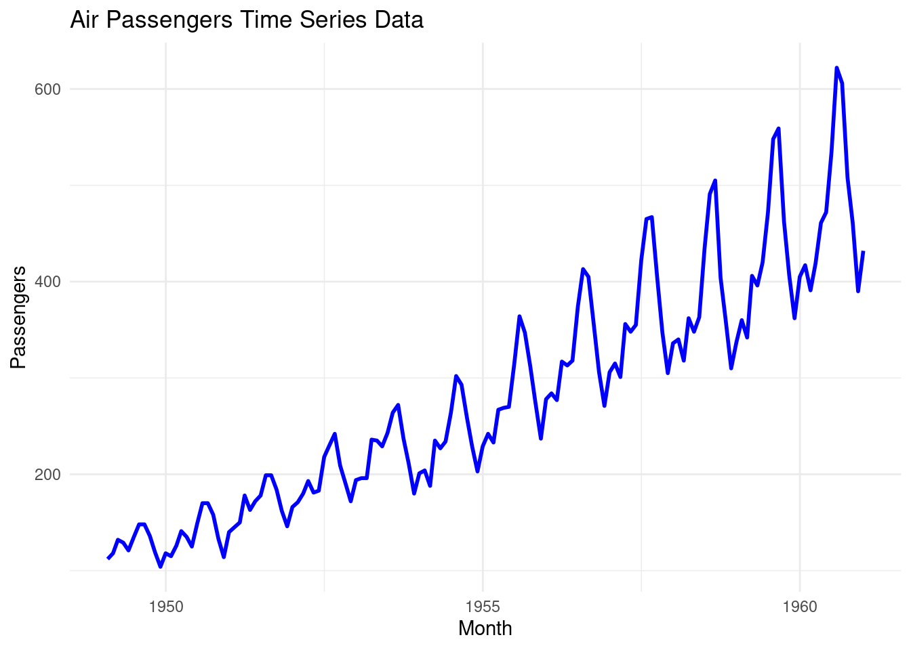
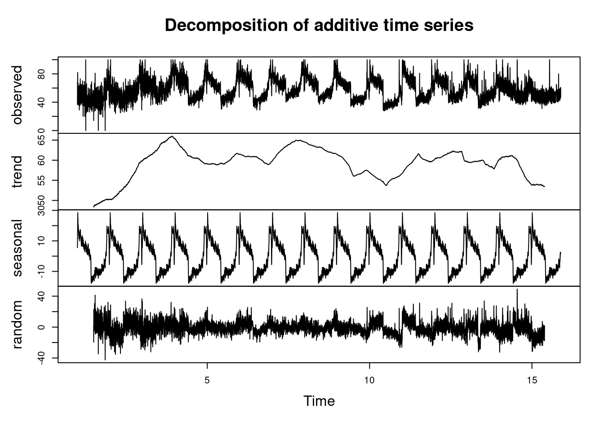

Chapter 9 Time Series Analysis
9.1 Introduction to Time Series Data
The time series data refers to a sequence of data points collected or recorded at regular time intervals. Each data has a specific time stamps and the data is always dependent on the previous time and after. The order of the rows doesn’t matter but the timestamp does, this is what is referred to as temporal ordering. Here are some of the distinct characteristics of time series data;
- Trend: the time series data tend to show long-term increase or decrease over a period of time.
- Temporal Dependence: In time series, the current data values are often influenced by the previous data values and may impact the future ones.
- Seasonality: some of the time series data often exhibit repeating patterns at regular intervals for instance daily, monthly and annually.
- Autocorrelation: current values can be correlated with future or previous time points.
- Stationarity: Time series is often stationary if its statistical properties for instance mean and variance remain constant over time.
Time series has several applications in the industry, here are some of its applications;
- Forecasting; predicting future values based on the previous and current values.
- Anomaly detection; identify outliers or any unusual patterns over a certain period of time.
- Seasonality; Find and analyze recurring patterns.
- Trend Analysis; Identify trends or patterns over a certain period of time.
- Used in economic and financial analysis to predict economic indicators such as GDP, exchange rates and inflation rates.
- Measuring natural phenomena like measuring rainfall in weather forecasting.
9.2 Basic Time Series Concepts
- Components of Time Series

The above graph represents an example of a time series data. To understand the underlying structure in time series, it is broken down into three components; trend, seasonality and noise. These components characterize the pattern and behavior of data over time.
- Trend; This will show the general direction of data whether it is upward(increasing) or downward(decreasing). They indicate long-term movement depicting overall growth or decline. The above chart shows that there was an overall growth(upward trend) over the year
- Seasonality; It is the predictable pattern that appear regularly. In the chart above there is a quarterly rise and drop of values.
- Cycles; represents the fluctuations that don’t have a fixed period.
- Noise; its is the residual variability of data that has no explanations by the factors affecting the trend. The variability is always small compared to the trend and cycle.
Lets use the R inbuilt data set, AirPassengers to decompose the time series data into trend, seasonality …
## [1] 112 118 132 129 121 135# Decompose the air passengers time series
decomposed_ts <- decompose(AirPassengers)
# Plotting will be done later
# decomposed_ts # uncomment to show the dataPractical exercise
In this course, you will be required to download the amazon stock prices prediction data set from here
Solution
library(dplyr)
# Load the data
amazon_stocks <- read.csv("data/amazon_trends.csv")
# Ensure the data is ordered by date (if necessary)
amazon_stocks <- amazon_stocks %>% arrange(Date)
# Convert to time series object
ts_data <- ts(amazon_stocks$Google_Trends, frequency = 365)
# Decompose the time series data
decomposed_data <- decompose(ts_data)________________________________________________________________________________
Decompose the time series data set into trend, seasonal and residual components.
- Visualization of Time Series Data
Visualization is a crucial step in the time series analysis process as it enables;
- the researcher to analyze the important concepts in the data such as trend, seasonality and noise
- the analyst to track perfomance over time
- to diagnose alien behaviors like sudden spikes and presence of outliers
- the analyst to communicate insights to the non-technical stake holders.
Lets visualize the time series data of the AirPassengers.
plot.ts(AirPassengers,
main = "AirPasengers Time Series ",
ylab = "Passengers",
xlab = "Time",
col = "blue",
lwd = 2)
Lets now visualize the decomposed time series.

The number of Air Passengers has increased from 1950 to 1960. There is an upward trend. Now lets repeat the process using the ggplot2 library.
# Load the library
library(ggplot2)
# Convert the air passengers to a dataframe
df_airpassengers <- data.frame(
# Month = as.Date(time(AirPassengers)), # Extracting the time component
Month = seq(from = as.Date("1949-01-31"), to = as.Date("1960-12-31"), by = "month"),
Passengers = as.numeric(AirPassengers) # Extracting the passenger counts
)
head(df_airpassengers)## Month Passengers
## 1 1949-01-31 112
## 2 1949-03-03 118
## 3 1949-03-31 132
## 4 1949-05-01 129
## 5 1949-05-31 121
## 6 1949-07-01 135# Plot the data
ggplot(df_airpassengers, aes(x = Month, y = Passengers)) +
geom_line(color = "blue", size = 1) + # Line for the time series data
labs(title = "Air Passengers Time Series Data", # Title
x = "Month", # X-axis label
y = "Passengers") + # Y-axis label
theme_minimal() # Apply a minimal theme## Warning: Using `size` aesthetic for lines was deprecated in
## ggplot2 3.4.0.
## ℹ Please use `linewidth` instead.
## This warning is displayed once every 8 hours.
## Call `lifecycle::last_lifecycle_warnings()` to see
## where this warning was generated.
Now lets visualize the decomposed time series (AirPassengers) data using the ggplot2 library;
- create a data frame from the decomposed data
# Create a data frame with all the components
df_decomposed <- data.frame(
Date = seq(from = as.Date("1949-01-31"), to = as.Date("1960-12-31"), by = "month"),
Observed = as.numeric(AirPassengers),
Trend = as.numeric(decomposed_ts$trend),
Seasonal = as.numeric(decomposed_ts$seasonal),
Residual = as.numeric(decomposed_ts$random)
)
# Remove the null values
df_decomposed <- na.omit(df_decomposed)
head(df_decomposed)## Date Observed Trend Seasonal Residual
## 7 1949-07-31 148 126.7917 63.83081 -42.622475
## 8 1949-08-31 148 127.2500 62.82323 -42.073232
## 9 1949-10-01 136 127.9583 16.52020 -8.478535
## 10 1949-10-31 119 128.5833 -20.64268 11.059343
## 11 1949-12-01 104 129.0000 -53.59343 28.593434
## 12 1949-12-31 118 129.7500 -28.61995 16.869949Practical exercise
Using the amazon stock prices prediction data set, plot the data to identify time series patterns and trends
Solution
library(dplyr)
# Load the data
amazon_stocks <- read.csv("data/amazon_trends.csv")
# Ensure the data is ordered by date (if necessary)
amazon_stocks <- amazon_stocks %>% arrange(Date)
# Convert to time series object
ts_data <- ts(amazon_stocks$Google_Trends, frequency = 365)
# Decompose the time series data
decomposed_data <- decompose(ts_data)
# Plot the decomposed data
plot(decomposed_data) ________________________________________________________________________________
________________________________________________________________________________
9.3 Basic Time Series Forecasting
9.3.1 Moving Averages
Moving average is a statistical calculations used to analyze values over a specific period of time. Its main focus is to smooth out the short term fluctuations that makes it easier to identify the underlying trends in the data. It smoothens the time series data by averaging the the values over a sliding window.
There are two types of Moving Averages, namely;
- Simple Moving Averages(SMA)
- Weighted Moving Averages (WMA)
Moving Average can also be referred to as the rolling mean. In this course we will demonstrate how to calculate and plot the Simple Moving Average using the rollmean() and filter() functions from the zoo and the Base R respectively.
- Load the required libraries
- Load the data and calulate the moving average using the
rollmean()function. Since the data was collected in monthly basis, a yearly moving average will be calculated.
# Load the AirPassengers dataset
data("AirPassengers")
# Calculate 12-month moving average using rollmean() from zoo package
moving_avg <- rollmean(AirPassengers,
k = 12, # 12- Month Moving Average
fill = NA)
# Create a data frame combining the original data and moving average
df_airpassengers <- data.frame(
Month = as.Date(time(AirPassengers)),
Passengers = as.numeric(AirPassengers),
MovingAvg = as.numeric(moving_avg)
)
# View the first few rows of the data frame
head(df_airpassengers, 10)## Month Passengers MovingAvg
## 1 1949-01-01 112 NA
## 2 1949-02-01 118 NA
## 3 1949-03-01 132 NA
## 4 1949-04-01 129 NA
## 5 1949-05-01 121 NA
## 6 1949-06-01 135 126.6667
## 7 1949-07-01 148 126.9167
## 8 1949-08-01 148 127.5833
## 9 1949-09-01 136 128.3333
## 10 1949-10-01 119 128.8333- Now plot the time series data along with the moving average
# Plot original data and moving average
ggplot(df_airpassengers, aes(x = Month)) +
geom_line(aes(y = Passengers), color = "blue", size = 1) + # Original data
geom_line(aes(y = MovingAvg), color = "red", size = 1.2) + # Moving average
labs(title = "AirPassengers - Moving Average (12 months)",
y = "Number of Passengers", x = "Month") +
theme_minimal()## Warning: Removed 11 rows containing missing values or values
## outside the scale range (`geom_line()`).
The blue line represents the original time series data
The red line represents the Moving Average data, you can see that the line is smoother.
Let’s repeat the process but this time we use the
filter()function from the Base R. Rememberdplyralso hasfilter()function. To speficify usestats::filter().
# Calculate the Moving Average
moving_avg_filter <- stats::filter(AirPassengers, rep(1/12, 12), sides = 2)
# Add the moving average to the existing data frame
df_airpassengers$MovingAvg_Filter <- as.numeric(moving_avg_filter)
# Plot original data and moving average calculated by filter()
ggplot(df_airpassengers, aes(x = Month)) +
geom_line(aes(y = Passengers), color = "blue", size = 1) + # Original data
geom_line(aes(y = MovingAvg_Filter), color = "green", size = 1.2) + # Moving average from filter
labs(title = "AirPassengers - Moving Average (12 months, filter())",
y = "Number of Passengers", x = "Month") +
theme_minimal()
- The green line represents the simple moving average over a 12-month sliding window
Practical exercise
Apply 30-day moving averages on the amazon stock.
Solution
library(dplyr)
library(zoo)
library(ggplot2)
# Load the data
amazon_stocks <- read.csv("data/amazon_trends.csv")
# Ensure the data is ordered by date (if necessary)
amazon_stocks <- amazon_stocks %>% arrange(Date)
# Calculate 30-day moving average (approximate for monthly)
amazon_stocks <- amazon_stocks %>%
mutate(moving_avg_30 = rollmean(Google_Trends, k = 30, fill = NA))
# Plot the original data and moving average
ggplot(amazon_stocks, aes(x = Date)) +
geom_line(aes(y = Google_Trends, color = "Original"), size = 1) +
geom_line(aes(y = moving_avg_30, color = "30-Day Moving Avg"), size = 1) +
labs(title = "Stock Price with 30-Day Moving Average",
x = "Date", y = "Stock Price") +
scale_color_manual(values = c("Original" = "blue", "30-Day Moving Avg" = "red")) +
theme_minimal() +
theme(legend.title = element_blank())## `geom_line()`: Each group consists of only one
## observation.
## ℹ Do you need to adjust the group aesthetic?## Warning: Removed 29 rows containing missing values or values
## outside the scale range (`geom_line()`).## `geom_line()`: Each group consists of only one
## observation.
## ℹ Do you need to adjust the group aesthetic?
Work on it later- Copy the guide
________________________________________________________________________________
9.3.2 ARIMA model
ARIMA stands for AutoRegressive Integrated Moving Average that is defined in three parameters namely; p, d and q where;
- AR(p) Autoregression: This utilizes the relationship between the current values and the previous one where the current ones are dependent on the previous.
- I(d) Integration: It entails subtracting the current observations of a series with its previous values
dnumber of times. This is done to make the time series stationary. - MA(q) Moving Average: A model that uses the dependency between an observation and a residual error from a moving average model applied to lagged observations. A moving average component depicts the error of the model as a combination of previous error terms. The order q represents the number of terms to be included in the model
In summary, p, d and q represents the number of autoregressive (AR) terms, the number of differences required to make the series stationary and the number of moving averages(MA) respectively. These values are determined using the following diagonstic tools;
- Autocorrelation Function(ACF): identifies the MA terms
- Partial Autocorrelation Function (PACF): identifies the number of AR terms.
- Differencing: determines the value of
dneed to make the series stationary.
R has auto.arima() function from the forecast library designed to create the ARIMA model.
The forecast library can be installed by;
install.packages("forecast")Lets use the AirPassengers data to design our ARIMA model.
Step 1: Check stationarity
To create an ARIMA model the time series data, in this case the AirPassengers, must be stationary i.e have a constant mean and variance. Otherwise, differencing is applied to make it stationary. The diff() is used to this.
## Registered S3 method overwritten by 'quantmod':
## method from
## as.zoo.data.frame zoo# Load the AirPassengers data set if not loaded already
# Make the data stationary by differencing
diff_passengers <- diff(log(AirPassengers))Step 2: Use the ACF and PACF Plots to Identify ARIMA Parameters
The ACF is used to find the correlation between the time series and the lagged versions((previous) of itself. Thats the
q(MA) parameter.The PACF finds the correlation between the time series and the lagged versions of itself but after removing the effect of the intermediate lags. Thats the
p(AR) parameter
Step 3: Plot the ACF and PACF
The acf() and pacf functions are used to generate the plots.
# Plot the ACF and PACF of the differenced data
par(mfrow = c(1, 2)) # Set up for side-by-side plots
# ACF plot
acf(diff_passengers, main = "ACF of Differenced AirPassengers")

<-Interpret the plots->
The AirPassengers data set is not stationary, therefore the data will be transformed by log-transform before applying differencing
# Log transformation to stabilize variance
log_passengers <- log(AirPassengers)
# Difference the log-transformed data to make it stationary
diff_passengers <- diff(log_passengers)
# Plot the differenced series to check stationarity
plot(diff_passengers, main = "Differenced Log of AirPassengers", ylab = "Differenced Log(Passengers)", xlab = "Time")
Step 4: Fit the ARIMA model
The auto.arima() function can be used to automate the process of selecting the p, d, q parameters.
# Auto-identify ARIMA parameters and fit the model
fit_arima <- auto.arima(log_passengers)
# Display the summary of the fitted ARIMA model
summary(fit_arima)## Series: log_passengers
## ARIMA(0,1,1)(0,1,1)[12]
##
## Coefficients:
## ma1 sma1
## -0.4018 -0.5569
## s.e. 0.0896 0.0731
##
## sigma^2 = 0.001371: log likelihood = 244.7
## AIC=-483.4 AICc=-483.21 BIC=-474.77
##
## Training set error measures:
## ME RMSE MAE MPE MAPE MASE
## Training set 0.0005730622 0.03504883 0.02626034 0.01098898 0.4752815 0.2169522
## ACF1
## Training set 0.01443892Lets fit the ARIMA model with of order 1 1 1 to represent p d q respectively.
# Fit ARIMA(1,1,1) model
fit_manual_arima <- arima(log_passengers, order = c(1, 1, 1))
# Display the summary of the fitted ARIMA model
summary(fit_manual_arima)##
## Call:
## arima(x = log_passengers, order = c(1, 1, 1))
##
## Coefficients:
## ar1 ma1
## -0.5780 0.8482
## s.e. 0.1296 0.0865
##
## sigma^2 estimated as 0.01027: log likelihood = 124.31, aic = -242.63
##
## Training set error measures:
## ME RMSE MAE MPE MAPE MASE
## Training set 0.008294478 0.1009741 0.08585615 0.1401158 1.557282 0.9477905
## ACF1
## Training set 0.010984Step 5: Forecast with the ARIMA model
The fitted ARIMA model can now be used for forecasting the future values using the arima() function.
# Forecast for the next 24 months (2 years)
forecast_arima <- forecast(fit_arima, h = 24)
# Plot the forecast
plot(forecast_arima, main = "ARIMA Forecast for AirPassengers", xlab = "Time", ylab = "Log(Passengers)")
The blue part of the plot represents the forecasted values.
Practical exercise
Fit the ARIMA model to the Amazon Stock Prices Prediction data and interpret the results.
9.4 Hands-On Exercises
You will be required to download the Electricity Price & Demand 2018-2023 data set from here
Perform time series on the total demand on one of the csv files provided from visualization to forecasting